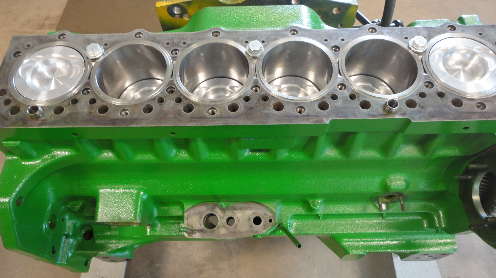

Work Experience
Software Engineering Part Time Student
John Deere
Since October I have worked part time for John Deere in Ames, developing and testing embedded systems. I have lead the effort to test lighting components, assisted in developing features for a control system, and have most recently been working to optimze the testing system, with hopes of reducing the time engineer's spend between tests by about 75%. This work has been primarily individual, with collaboration from a full time colleague. The majority of my work has been done using C or Batch Scripting, with Windows Powershell used to assist my work.
Product Engineering Intern
John Deere
During the summer of 2019, I worked for John Deere's Power Systems branch, on a team tasked with determining the cause of engine failure. Over the course of the summer I worked on a plethora of projects, including data analysis and vizualization of engine data using Matlab, engine component design using Creo Parametric, and altering manufacturing processes through communication with internal and external colleagues.
Salesforce Development Intern
Principal Financial
During the summer of 2019, I worked for John Deere's Power Systems branch, working with a team to determine the cause of engine failure. I did this using a number of tools, including Matlab and Creo Parametric.